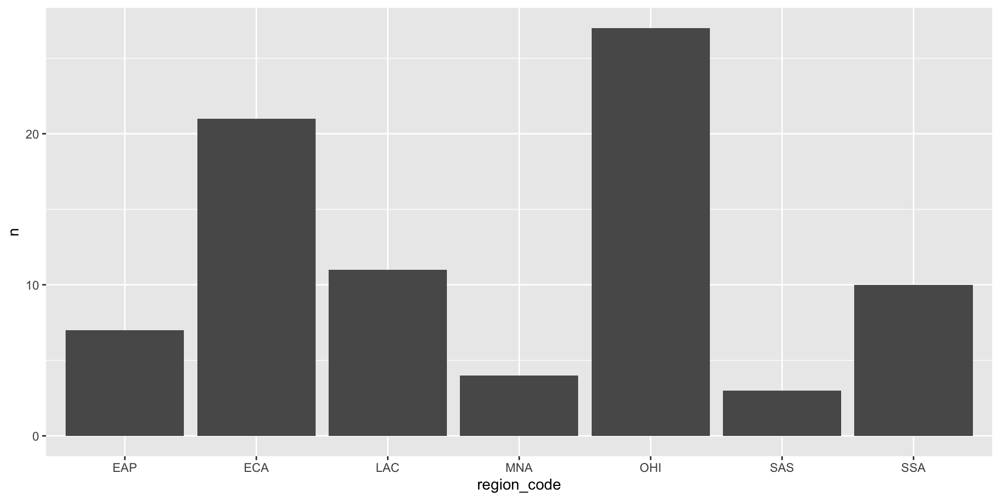
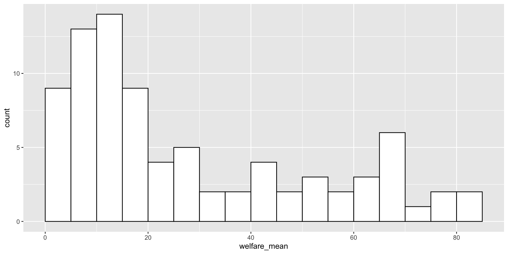
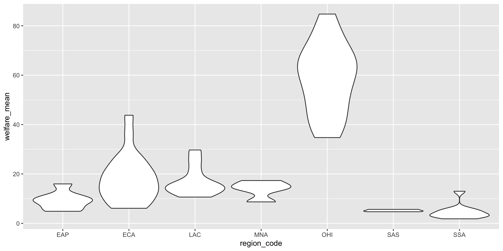
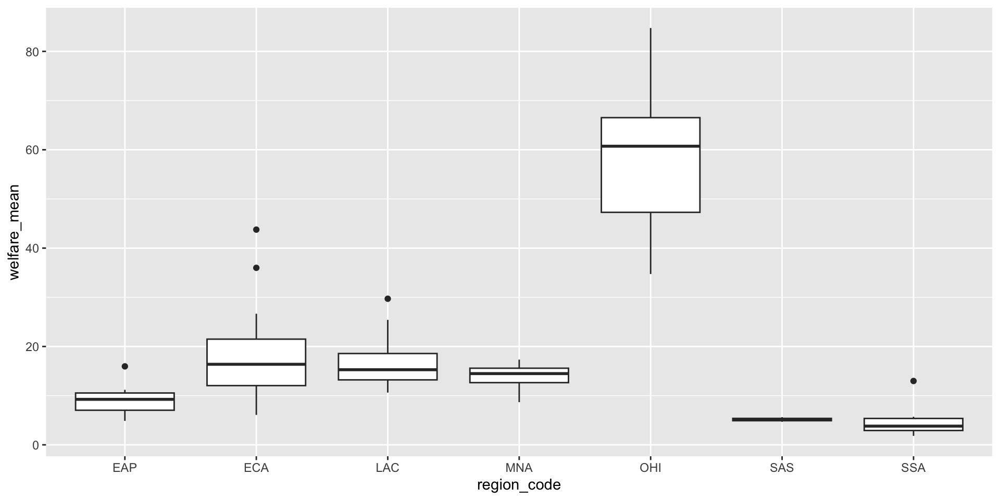
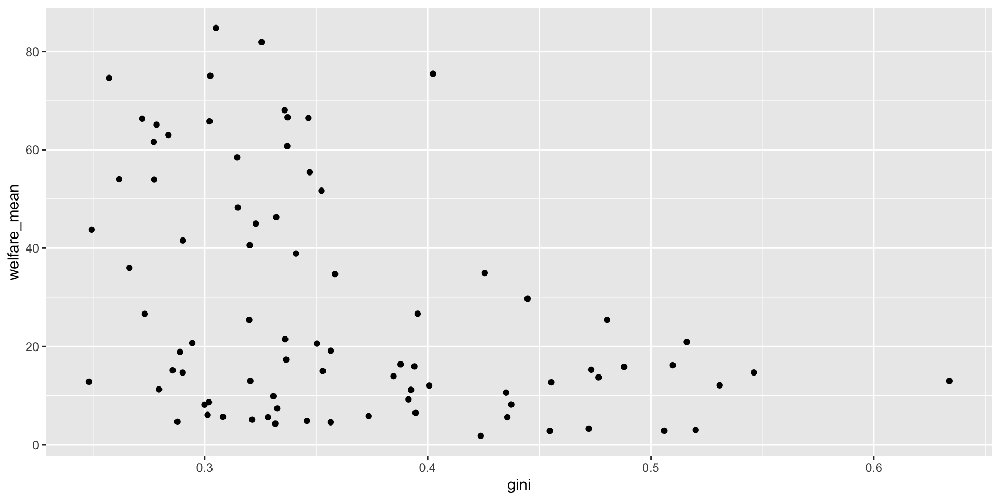
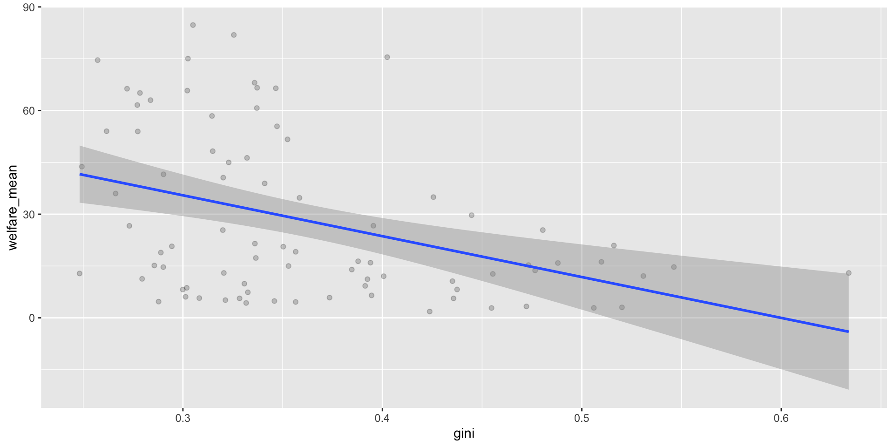
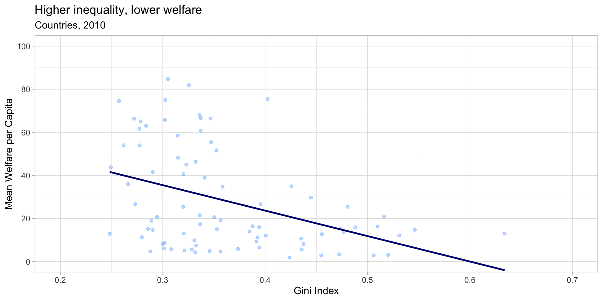

library(tidyverse) # readr, dplyr, ggplot2, etc.
library(patchwork) # combine plots side-by-side
library(ggthemes) # extra themesData Skills for Psychology — Module 4
These slides are adapted from Applied Data Skills Ch. 3.
By the end of this class, you will be able to:
{ggplot2}ggsave()Make sure you have these packages loaded:
Tip
If you haven’t installed patchwork or ggthemes yet, run in the Console:
install.packages(c("patchwork", "ggthemes"))
You only need to do this once!
We’ll use data from the World Bank’s Poverty and Inequality Platform. Load it from the web:
Each row is one country in 2010. Key columns:
region_name, region_code — world regioncountry_name, country_code — countrygini — inequality (0 = perfect equality, 1 = complete inequality)welfare_mean — mean welfare per capitawelfare_median — median welfare per capita{ggplot2} uses a layered grammar of graphics: plots are built up one piece at a time.
Think of it like building a presentation slide — each layer sits on top of the last:
Each layer is independently customizable — and you add them with +.
The book uses the black-and-white theme, not the default grey one. Add this to your setup chunk:
You can always override it on a per-plot basis — but this keeps things consistent.
Every plot starts with ggplot() and a data table:
That’s it — a blank grey box. No variables yet, so there’s nothing to draw.
Use aes() (aesthetic mapping) to tell ggplot which columns go where:
Now the axes exist, but there’s still nothing drawn — we haven’t told it how to represent the data.
Geoms are the shapes that represent your data — their functions all start with geom_. Add one with +:
Watch the +!
The + has to be at the end of the previous line, not at the start of the next one. If you write + geom_point() on its own line, you’ll get an error.
You can stack geoms — order matters (later layers draw on top):
Try it!
pip data with read_csv() (see the Setup slide).theme_set(theme_bw()).gini on x and welfare_mean on y. Which geom should you use?geom_smooth(method = "lm", formula = y ~ x) — to show a trendline.There are a lot of different geoms, but these are ones that you’ll see most in this class:
geom_pointgeom_jittergeom_boxplotgeom_linegeom_histogramgeom_errorbargeom_smoothTo change how all points (or lines, or bars) look, set arguments inside the geom — not inside aes():
When you want the style to represent a variable, put it inside aes() instead:
The golden rule
aes() → the aesthetic represents dataaes() (in the geom) → the aesthetic is a fixed styleggplot syntaxIf you find yourself getting tripped up by the syntax for ggplot, don’t worry. This is normal!
It is common for researchers to find examples of what they want online, and then tweak the examples to fit their project.
Different kinds of data call for different plots. We’ll walk through the most common cases:
The ggplot2 cheat sheet is a great quick reference.
geom_bar()geom_bar() counts rows per category — only needs an x aesthetic:
geom_col() for Pre-computed CountsIf your data already has a count column, use geom_col() (which needs both x and y):

geom_histogram() splits a continuous variable into bins and counts each bin:

Always set binwidth or bins — the default usually isn’t what you want.
Violin plots show the shape of a distribution for each group:

Boxplots show summary statistics, not shape:

You can layer geoms to show shape, summary, and mean all at once:
ggplot(pip, aes(x = region_code, y = welfare_mean,
fill = region_code)) +
geom_violin(alpha = 0.4, scale = "width") +
geom_boxplot(width = 0.25, fill = "white",
alpha = 0.75, outlier.alpha = 0) +
stat_summary(fun = mean, geom = "point",
size = 2, shape = 18) +
guides(fill = "none") +
labs(x = "Region", y = "Mean Welfare per Capita")Try it!
Using the pip data:
gini (binwidth around 0.02 is a reasonable start).gini by region_code.geom_point() is the workhorse for two continuous variables:

A good rule of thumb: put the cause (or predictor) on the x-axis and the effect (or outcome) on the y-axis.
geom_smooth() fits a line through the data. The shaded ribbon is the confidence interval.

method = loess — flexible, wavy line (default for small data)method = lm, formula = y ~ x + I(x^2) — quadratic (one bend)se = FALSE to hide the confidence ribbonscale_ Familyscale_ functions control how each aesthetic maps to the plot. Match the function to the data type:
| Data type | x-axis | y-axis |
|---|---|---|
| Continuous | scale_x_continuous() |
scale_y_continuous() |
| Categorical | scale_x_discrete() |
scale_y_discrete() |
To zoom in without dropping data, use coord_cartesian():
Warning
Setting limits inside scale_ actually drops data outside the range. This matters for things like boxplots and violins! Use coord_cartesian() to just zoom.
{ggplot2} ships with several themes; {ggthemes} adds many more:
Some favourites to try: theme_minimal(), theme_bw(), theme_classic(), ggthemes::theme_gdocs().
theme() lets you override any theme element. Use element_blank() to remove something:
Check ?theme to see the (large!) list of things you can tweak.
labs()labs() adds a title, subtitle, caption, and axis labels all at once:
Try it!
Starting from your scatterplot:
alpha = 0.3 to geom_point() so the points are transparent.scale_x_continuous() and scale_y_continuous() to add nicer axis labels.theme_minimal() or theme_light()).labs() to add a title, subtitle, and caption.region_code.ggsave()ggsave() saves the last plot you made by default:
Or save a plot you stored in an object:
The file type comes from the extension (.png, .jpg, .pdf, .svg, …). Default units are inches, but you can pass units = "cm" or "mm".
When lots of points pile up on the same spot, you can’t see what’s there:
Every rating is only 1, 2, 3, 4, or 5 — so all points squash onto 5 horizontal lines.
geom_jitter() nudges each point a random tiny amount:
height / width — how far to nudge (in data units)alpha — transparency, so overlapping points add up visiblyfacet_wrap() breaks the plot into small multiples — one panel per category:
Read ~ rating as “by rating”. label_both adds both the variable name and its value to each panel.
Start simple, add layers until you’re happy:
ggplot(pip, aes(x = gini, y = welfare_mean)) +
geom_point(colour = "dodgerblue", alpha = 0.3) +
geom_smooth(method = lm, formula = y ~ x,
colour = "navy", se = FALSE) +
scale_x_continuous(name = "Gini Index",
breaks = seq(0, 1, .1)) +
scale_y_continuous(name = "Mean Welfare per Capita",
breaks = seq(0, 100, 20)) +
coord_cartesian(xlim = c(.2, .7), ylim = c(0, 100)) +
theme_light(base_size = 12) +
theme(plot.background = element_blank()) +
labs(title = "Higher inequality, lower welfare",
subtitle = "Countries, 2010")Build these plots one layer at a time — render at each step. It’s much easier to find the broken layer that way.

ggplot() + aes() + geom_*() — the three minimum ingredientsaes() → represents data; outside aes() → fixed stylegeom_bar() counts rows; geom_col() uses a pre-computed countgeom_smooth() for two continuous variablesfacet_wrap(~ var) breaks a plot into small multiplesscale_ + coord_cartesian + theme_* + labs to polishggsave()📖 Read: Chapter 3 of Applied Data Skills to solidify today’s material
✍️ Assignment: TBD
❓ Questions?